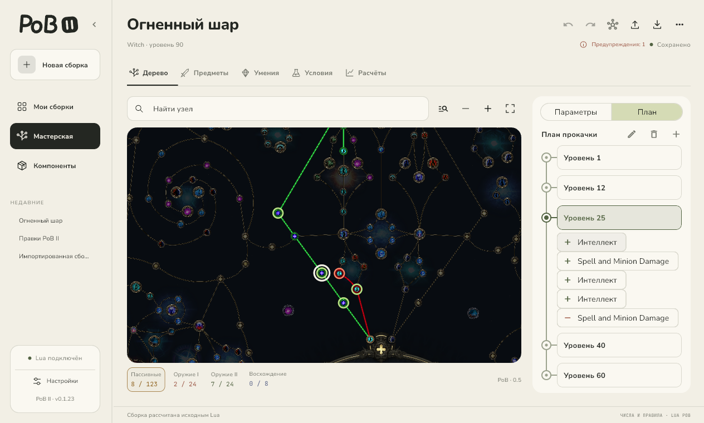
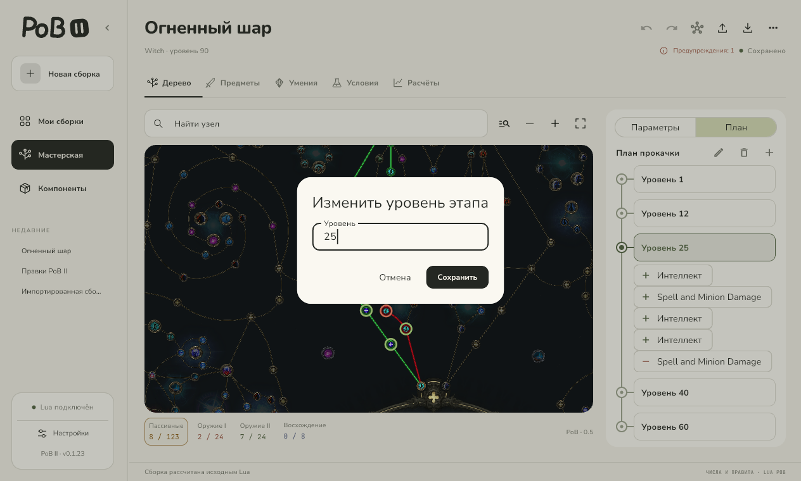
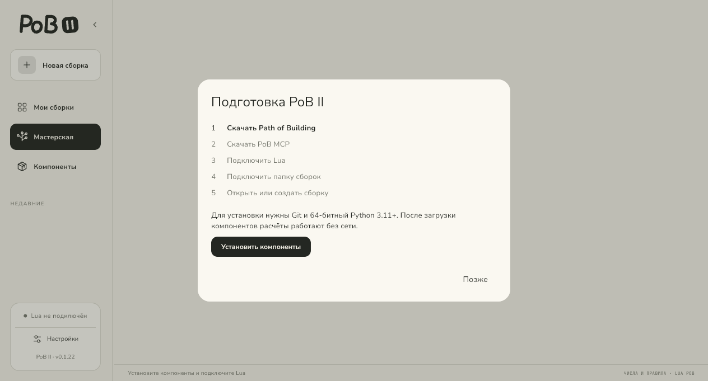
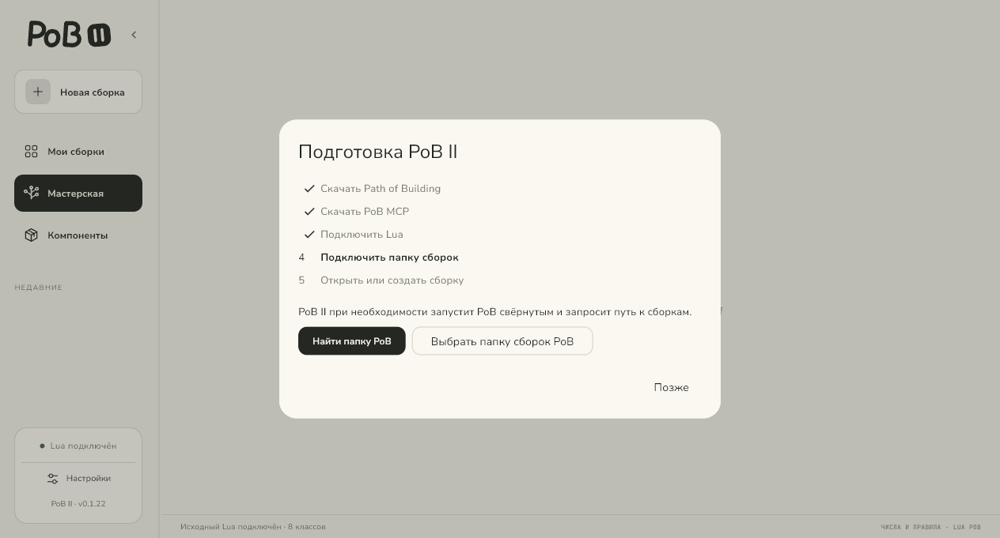
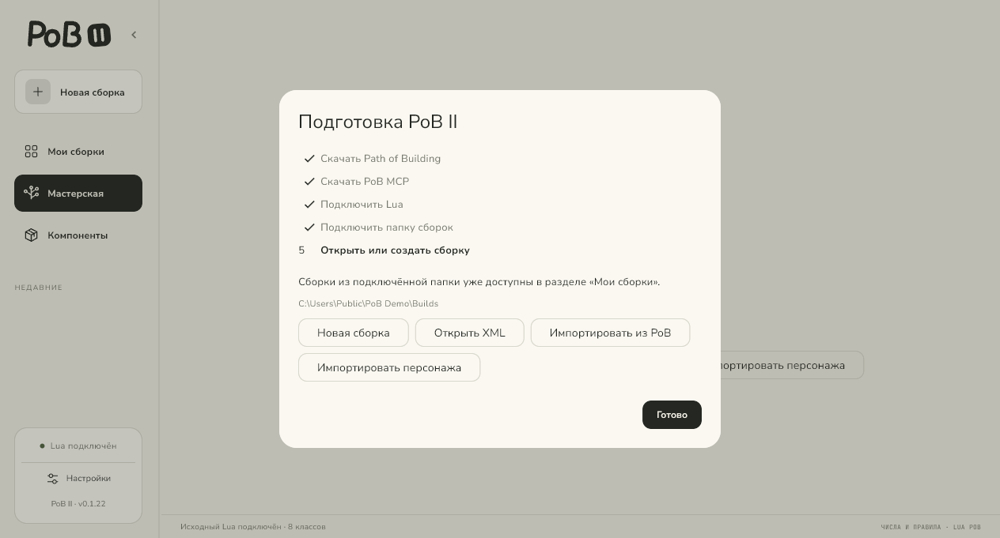

ГАЛЕРЕЯ / POB II
Так выглядит
ваша мастерская.
Снимки PoB II на Windows. Нажмите на снимок, чтобы рассмотреть детали. На телефоне оригинал откроется в отдельной вкладке для увеличения.
План прокачки
PoB II v0.1.23
Подсветка узла
Наведите курсор на узел в списке, чтобы увидеть его на дереве.

Редактирование уровня этапа
Измените уровень, сохранив выбранные узлы этапа.
В PoB II v0.1.22

Мастер первого запуска
От установки компонентов до открытия первой сборки.

Lua подключён
После подключения Lua мастер предлагает найти папку сборок.

Папка сборок найдена
Мастер показывает найденный путь и предлагает открыть или создать сборку.

Поиск узлов по характеристике
Фильтры сверху, результаты в компактном списке, дерево остаётся видно.

Мои сборки
Быстрый поиск, импорт из PoB и доступ к общей папке.
Возможности приложения
Дерево, умения, предметы и настройки
Всё дерево перед вами
Иконки, подсказки, пути к узлам и показатели из исходного Lua.

Контекст при наведении
Описание узла и его влияние на сборку без постоянных подписей.

Своя комбинация камней
Умение первым, поддержки рядом. Каталог и проверка совместимости.

Экипировка на своих местах
Схема персонажа, описание предмета, замена и два набора оружия.

Удобно именно вам
Тема, язык, масштаб и горячие клавиши с сохранением выбора.

Расчёты на вашем компьютере
Отдельные версии PoB и MCP, проверка совместимости и откат.
Подбор предметов

Сначала сравнить, потом применить
Показатели «Было → Стало», цвет изменений и Undo/Redo.

От поиска к примерке
Подготовка поиска на официальном сайте и возврат текста предмета.